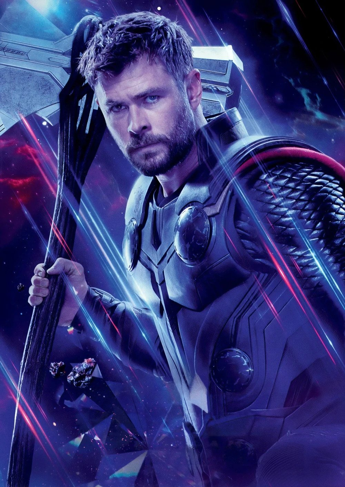

The son of Odin uses his mighty abilities as the god of thunder to protect his home Asgard
and planet
Earth alike. Thor Odinson wields the power of the ancient Asgardians to fight evil throughout the Nine
Realms.
Early Life
Thor had an idyllic childhood, brought up in Asgard as the most treasured son of Odin and his wife Frigga. His best friend and playmate was his adopted brother Loki, and though the brothers were both rivals for their father's throne, they still remained close companions.

Warrior Years
Thor proved himself a great warrior, often leading his own band of warriors into battle, which included Sif, Loki, as well as the Warriors Three on adventures which he would describe as being glorious. However, he was also known to be reckless when Loki jokingly reminded him that he would be dead had he not used a smoke veil to allow them to escape during one battle.War of the Nine Realms
Having brought Loki back to Asgard, Thor discovered that Vanaheim was getting slowly taken over by Marauders who were now taking advantage of the chaotic time. Thor gave Heimdall the Tesseract so he that could use its energy to repair the Rainbow Bridge so that the Asgardians could access the Bifrost Bridge once more in order to protect the Nine Realms once again.